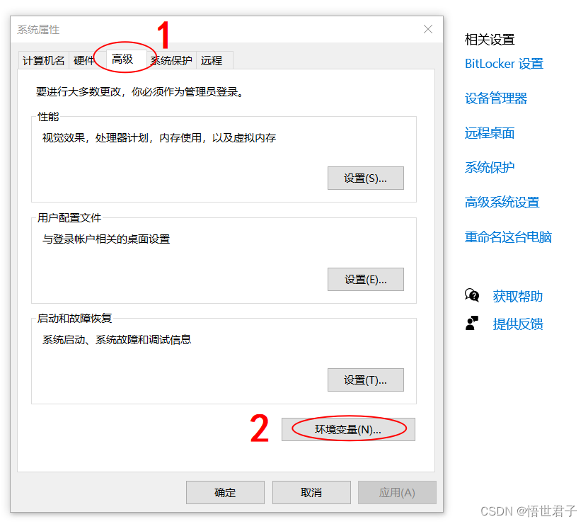

ChatGPT保姆式教程(微信机器人)
前言
互联网圈子里面ChatGPT现在实在是太火了，但是你不知道它，我只能说你OUT了，ChatGPT是什么呢？
由人工智能实验室OpenAI发布的对话式大型语言模型ChatGPT引爆中文互联网。它可以与人类轻松地对话，无论是回答各种奇怪的问题，还是写代码改bug，或者谈谈企业发展，聊点web3和NFT，来几句心灵鸡汤，ChatGPT都不在话下。
一句话来说ChatGPT就是一个个人的AI助手，由OpenAI这个公司开发，它现在已经非常完美了吗？
还不是，有些问题还是会理解错误，给的答案呢也是千差万别。它给了我们一个想象的空间。
第一大多数脑力工作者的劳动，并不能称之为脑力，只能叫工程。
第二如果这个技术再成熟一点，搜索引擎 、可能会被替代。社交软件可能会被重构。
第三未来你可能会有一个类似于钢铁侠的贾维斯。
那怎么玩呢？本期教程就带领大家如何注册，接下来就带领大家去研究。
访问地址
前提你需要一个上网工具（可以网上找找很多的）
官网地址：https://chat.openai.com/chat
- 通过这个地址进行注册，为什么需要梯子呢？是在注册/登录/邮箱验证，这三步有地区检测，如果检测你的地区不在国内的话会禁止访问。
国外手机号（https://sms-activate.org/cn/）
- 邮箱可以直接注册，但是需要一个国外的手机号，目前国内还不支持。通过上面给的国外手机号注册地址可以直接获取，不过需要1块钱，建议选巴西。支持支付宝充值！
1 注册ChatGPT 账号
ChatGPT：https://chat.openai.com/chat
注册邮箱建议优先使用Gmail
填完邮箱信息需登录邮箱点击验证
设置名称
选择接收验证码号码的国家，进行电话号码验证。

1.1 验证码接收平台注册
SMS-Activate：https://sms-activate.org/?ref=3099942
建议优先使用Gmail 邮箱注册。
点击充值
往下滑动到支付宝支付，使用支付宝充值0.2美元（不需要海外支付宝）。Open Ai 的一次验证码费用大概是11卢布，人民币1块多，不过只能充美金。不同的国家费用可能不一样，你可以根据你要使用的国家号码的费用充值，我这里使用的是印度。
服务搜索：openai
选择你要的对应国家接收验证码

点击加购会直接购买，显示电话号码
复制号码到ChatGPT 验证页面，点击获取验证码
验证码接收需要点时间，如果没有收到或超时或点击取消，会返还金额，可以重新购买号码。如果你选择的国家号码一直没有收到验证码，可以取消换国家号码重新验证。
我切换了3个印度号码，都没有收到验证码，最后切换使用印度尼西亚号码成功收到验证码。
1.2 注册成功界面
接收到验证码，复制到ChatGPT 页面验证，注册成功。
在使用的过程中如果出现以下类似页面内容，可以试一下这个方法：梯子开全局模式，浏览器首选语言设为你的代理地区相应语言或者英语，清除浏览器历史记录或者使用无痕模式。
以上为ChatGPT 注册流程，可能大家在注册或者使用过程中还会出现其他问题，可以联系我一起寻找解决方法。
vx: 15715088740【备注gpt才通过】
2 微信机器人搭建
首先是部署环节，可以有两种方式。
其一，需要有Golang环境。
2.1 Golang 环境搭建
Go（又称Golang）是Google开发的一种静态强类型、编译型、并发型，并具有垃圾回收功能的编程语言
golang 官网地址:https://golang.google.cn/
2.1.1 安装包下载
golang 官网地址:https://golang.google.cn/
点击Download ，下载
这里笔者选择最新版1.19，windows平台
2、配置环境变量
在我的电脑上右键，点击属性，打开下面这个页面
点击高级系统设置

点击新建
环境变量配置完成后，打开 cmd 窗口测试
# 输入 go version
输出 go 版本信息即环境变量配置成功
2.2 机器人搭建
2.2.1 golang环境部署
优点是操作简洁，但是推荐有一定技术底子的童鞋。
git clone https://github.com/malaohu/wechat-chatGPT.git
cd wechat-chatGPT
go mod tidy
在修改配置文件后，启动运行即可。
go run main.go
2.2.2 python环境部署
不需要本地Golang环境，Windows和Linux都适用。
直接下载执行文件和配置文件，可执行文件和配置文件放到同一个目录里。
Window系统双击就能运行了。
但是这种方法仍旧是要有OpenAI注册账号的。
在OpenAI官网上创建一个新的秘钥，用于修改配置文件。
记得将API keys复制下来。
1.克隆项目代码：
git clone https://github.com/zhayujie/chatgpt-on-wechat
cd chatgpt-on-wechat/
2.安装所需核心依赖：
pip3 install itchat-uos==1.5.0.dev0
pip3 install openai==0.25.0
然后在config.json中填入自定义配置，各配置项含义如下：
# config.json文件内容示例
{
"open_ai_api_key": "YOUR API KEY" # 填入上面创建的 OpenAI API KEY
"single_chat_prefix": ["bot", "@bot"], # 私聊时文本需要包含该前缀才能触发机器人回复
"single_chat_reply_prefix": "[bot] ", # 私聊时自动回复的前缀，用于区分真人
"group_chat_prefix": ["@bot"], # 群聊时包含该前缀则会触发机器人回复
"group_name_white_list": ["ChatGPT测试群", "ChatGPT测试群2"], # 开启自动回复的群名称列表
"image_create_prefix": ["画", "看", "找"] # 开启图片回复的前缀
}
2.2.3 运行
python app.py
程序启动后，浏览器就会跳出一个二维码网页，然后用微信扫码登录即可